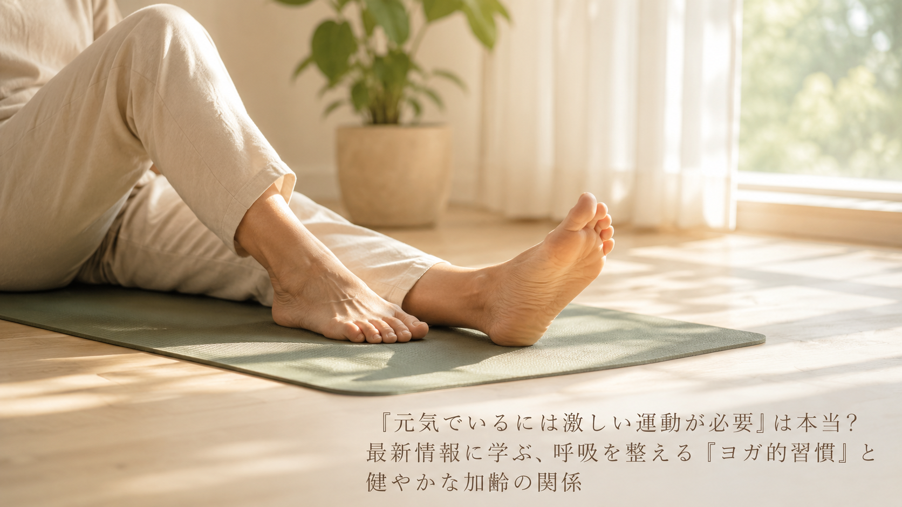

「元気でいるには激しい運動が必要」は本当？最新情報に学ぶ、呼吸を整える『ヨガ的習慣』と健やかな加齢の関係
「元気に過ごすには、しっかり汗をかくような運動をしなければならない」——そう思っている方も多いかもしれません。2026年6月、国連が定める「国際ヨガの日」を記念したイベントが東京・築地本願寺で開催され、話題になりました。今回はそのテーマ「Yoga for Healthy Ageing（ヨガで健やかに年を重ねる）」から、中高年の方にも取り入れやすい視点をご紹介します。

イベントが伝える3つのポイント
- 今年のテーマ「Yoga for Healthy Ageing」は、健康を"病気でない状態"ではなく日々をいきいきと過ごすことと捉える考え方だと紹介されている。長寿社会である日本において、年齢を重ねても心身ともに自分らしく充実した毎日を送ることの大切さが説明されています。
- ヨガは5,000年以上前からインドで受け継がれてきた実践で、単なる運動ではなく身体・呼吸・心の調和を重視するものだと説明されている。「結びつける」を意味するサンスクリット語に由来し、激しい動きよりも呼吸と姿勢の調和に重きが置かれてきたと紹介されています。
- 国際ヨガの日は2014年に国連で正式に制定され、世界各地で健康とウェルビーイングの大切さを再認識する機会になっていると説明されている。今回のイベントも、無料・事前登録制の参加しやすい形で開催されたと紹介されています。
中高年の私たちが意識したいこと
このイベントが伝えているのは、健やかに年を重ねるために必要なのは、激しい運動よりもむしろ、呼吸や姿勢に意識を向ける穏やかな時間かもしれない、という視点です。ヨガ教室に通ったり特別な道具を用意したりしなくても、日常の中で似たような感覚を取り入れることはできるとされています。次のような一般的に知られている習慣が、その手がかりになるかもしれません。
- 朝起きたら、椅子や布団の上で数回、ゆっくりと深呼吸をしてみる
- 一日のうちに数分、背筋を伸ばして座り、肩の力を抜く時間をつくってみる
- 就寝前に、呼吸のリズムに意識を向けながら軽く体を伸ばしてみる
※上記は一般的な生活習慣としてよく紹介される内容であり、特定の症状の改善や治療、予防を保証するものではありません。
本記事は、駐日インド大使館が2026年6月19日に発表したプレスリリース「＜開催迫る＞ヨガ発祥の国・インドが届ける、特別な朝のヨガ体験 インド大使館主催「International Day of Yoga 2026」 築地本願寺で開催」の内容を要約・紹介したものです。詳しい内容は出典元をご確認ください。
出典：駐日インド大使館 プレスリリース（アットプレス配信、2026年6月19日）
出典：駐日インド大使館 プレスリリース（アットプレス配信、2026年6月19日）
本記事は健康に関する一般的な情報提供を目的としたものであり、医学的な診断・治療・予防を目的としたものではありません。記載内容は出典元の見解の要約であり、当社（株式会社BISII）独自の見解や、当社が販売する製品の効果を示すものではありません。気になる症状がある場合は、医療機関へご相談ください。
当社では、日々のコンディショニングをサポートする空間電位ケア機器「DENBA Health」をご紹介しています。
DENBA Healthについて見る最終更新日：2026年7月11日